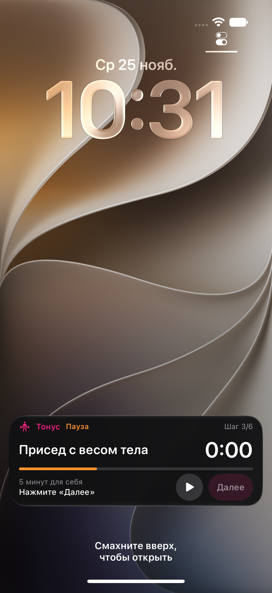
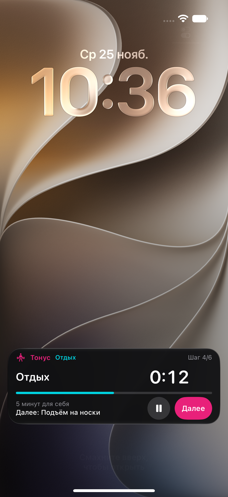
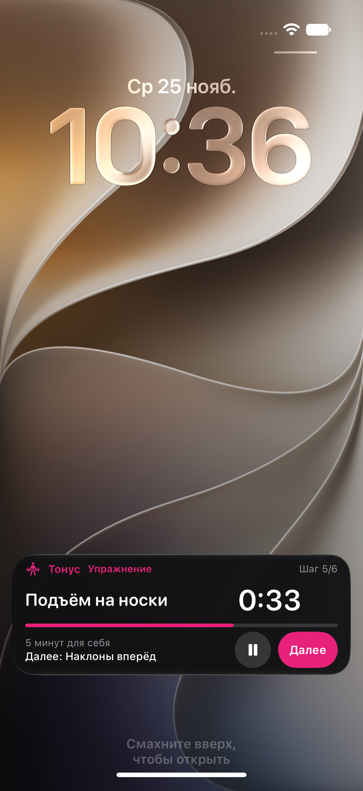

Никита Ревин, разработчик Тонуса ·
После упражнения кнопка «Далее» на карточке Тонуса может запустить отдых. Если на карточке уже идёт «Отдых», та же кнопка пропустит оставшееся время.
Запустите короткую тренировку
На главной откройте «Короткая тренировка без плана». Выберите «5 мин» и «Всё стоя» и нажмите «Начать». Заблокируйте iPhone, затем включите экран боковой кнопкой. Если iOS спросит, разрешить ли Эфир активности для приложения «Тонус», нажмите «Разрешить». Внизу экрана найдите карточку занятия с номером шага и таймером.
Пауза и переход дальше
Нажмите круглую кнопку с двумя полосками. На карточке появится «Пауза» и кнопка с треугольником. Нажмите на треугольник, чтобы продолжить. Пока тренировка на паузе, «Далее» недоступна.

После ходьбы на карточке появились «Шаг завершён» и 0:00. По кнопке «Далее» начался отдых. Пока шёл отсчёт, карточка показывала название следующего упражнения.

Если готовы перейти раньше, снова нажмите «Далее», пока идёт отдых. В примере на таймере оставалось 0:12, и после нажатия начался подъём на носки. Чтобы выдержать отдых целиком, дождитесь конца отсчёта.

Снимки сделаны на симуляторе iPhone 17 с русским интерфейсом Тонуса 1.7.1, сборка 25. Время на карточках взято из демонстрационного занятия.